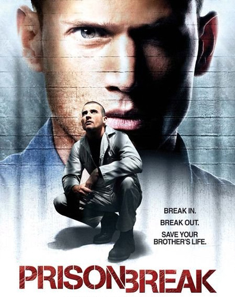
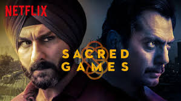
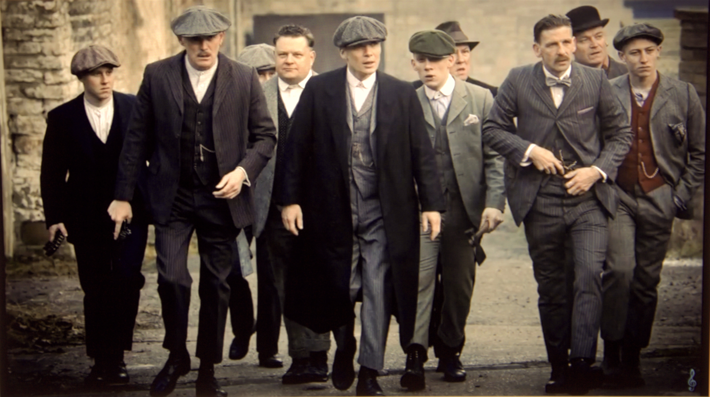
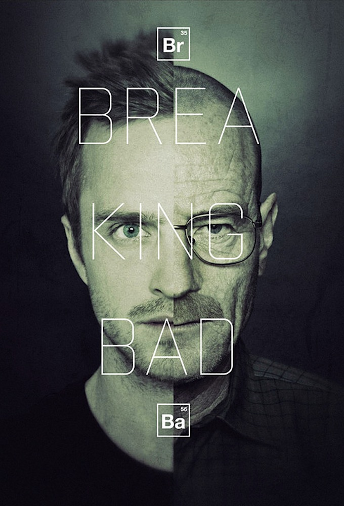

5: Money Heist

Ratings : 🌟 8.3
Genre :ActionCrimeMystery
Seasons : 5
Episodes : 32
Air-Date : 2 May 2017
Watch-Time : 1h 10 min.(Per Ep.)
Synopsis:
Set in Madrid, a mysterious man known as "The Professor" recruits a group of eight people, who choose cities for code-names, to carry out an ambitious plan that involves entering the Royal Mint of Spain, and escaping with €2.4 billion. After taking 67 people hostage inside the Mint, the team plans to remain inside for 11 days to print the money as they deal with elite police forces. In the events succeeding the initial heist, the group are forced out of hiding and find themselves preparing for a second heist, this time on the Bank of Spain, as they again deal with hostages and police forces.
4.1: Mirzapur

Ratings : 🌟 8.4
Genre : ActionCrimeDrama
Seasons : 2
Episodes : 19
Air-Date : 16 November 2018
Watch-Time : 60 min.(Per Ep.)
Synopsis:
The iron-fisted Akhandanand Tripathi is a millionaire carpet exporter and the mafia don of Mirzapur. His son, Munna, is an unworthy, power-hungry heir who will stop at nothing to inherit his father's legacy. An incident at a wedding procession forces him to cross paths with Ramakant Pandit, an upstanding lawyer, and his sons, Guddu and Bablu. It snowballs into a game of ambition, power and greed that threatens the fabric of this lawless city!
4.2: Prison Break
Ratings : 🌟 8.3
Genre : ActionCrimeDrama
Seasons : 6
Episodes : 91
Air-Date : August 29, 2005
Watch-Time : 44 min.(Per Ep.)
Synopsis:
An innocent man is framed for the homicide of the Vice President's brother and scheduled to be executed at a super-max penitentiary, thus it's up to his younger brother to save him with his genius scheme: install himself in the same prison by holding up a bank and, as the final month ticks away, launch the escape plan step-by-step to break the both of them out, with his full-body tattoo acting as his guide; a tattoo which hides the layout of the prison facility and necessary clues vital to the escape.
3: Sacred Games
Ratings : 🌟 8.6
Genre : ActionCrimeDrama
Seasons : 2
Episodes : 16
Air-Date : 5 July 2018
Watch-Time : 50 min.(Per Ep.)
Synopsis:
Sartaj Singh is a troubled Mumbai Police inspector who seeks validation from a police force he hates for its corruption. He receives a phone call from Ganesh Gaitonde, a notorious crime lord who has been missing for 16 years. He tells Sartaj to save the city in 25 days, beginning a chain of events that burrows deep into India's underworld. On his journey, Sartaj is helped by Research and Analysis Wing (RAW) officer Anjali Mathur; flashbacks detail Gaitonde's origins, and how he became Mumbai's crime lord. The first season follows Sartaj as he tries to uncover clues about Gaitonde's past and learns about a connection between Gaitonde and his father.
2.1: Narcos

Ratings : 🌟 8.8
Genre : BiographyCrimeDrama
Seasons : 3
Episodes : 30
Air-Date : August 28, 2015
Watch-Time : 49 min.(Per Ep.)
Synopsis:
The first season sees lawyer-by-day Matt Murdock use his heightened senses from being blinded as a young boy to fight crime at night on the streets of New York City's Hell's Kitchen neighborhood as Daredevil, while uncovering a conspiracy of the criminal underworld being led by Wilson Fisk. In the second season, Murdock continues to balance life as a lawyer and Daredevil, while crossing paths with Frank Castle / Punisher, a vigilante with far deadlier methods, as well as the return of an ex-girlfriend—Elektra Natchios. In the third season, after Fisk is released from prison, Murdock, who has been missing for months following the events of The Defenders, reemerges as a broken man and must decide between hiding from the world as a criminal lawyer, or embracing his life as a hero vigilante.
2.2: Peaky Blinders
Ratings : 🌟 8.8
Genre : CrimeDrama
Seasons : 7
Episodes : 37
Air-Date : 12 September 2013
Watch-Time : 60 min.(Per Ep.)
Synopsis:
Peaky Blinders is an English television crime drama set in 1920s Birmingham, England in the aftermath of World War I. The series, which was created by Steven Knight and produced by Caryn Mandabach Productions, Screen Yorkshire and Tiger Aspect Productions, follows the exploits of the Shelby crime family. Screen Yorkshire provided funding for the production through the Yorkshire Content Fund. It was the first production to receive funding from the Yorkshire Content Fund, which in turn made certain the majority of the show was filmed in Yorkshire as part of the deal.
1: Breaking Bad
Ratings : 🌟 9.5
Genre : ActionAdventureSci-Fi
Seasons : 5
Episodes : 62
Air-Date : January 20, 2008
Watch-Time : 49 min.(Per Ep.)
Synopsis:
When chemistry teacher Walter White is diagnosed with Stage III cancer and given only two years to live, he decides he has nothing to lose. He lives with his teenage son, who has cerebral palsy, and his wife, in New Mexico. Determined to ensure that his family will have a secure future, Walt embarks on a career of drugs and crime. He proves to be remarkably proficient in this new world as he begins manufacturing and selling methamphetamine with one of his former students. The series tracks the impacts of a fatal diagnosis on a regular, hard working man, and explores how a fatal diagnosis affects his morality and transforms him into a major player of the drug trade.